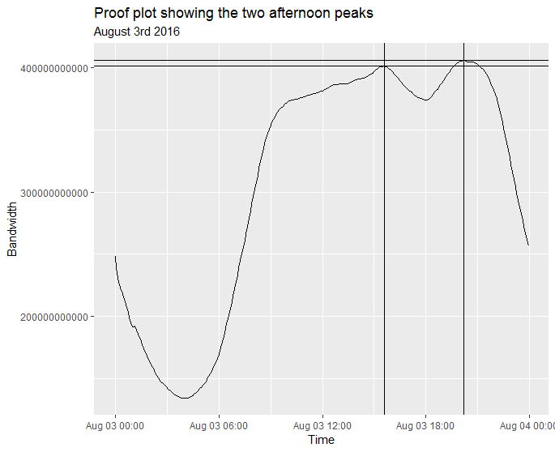
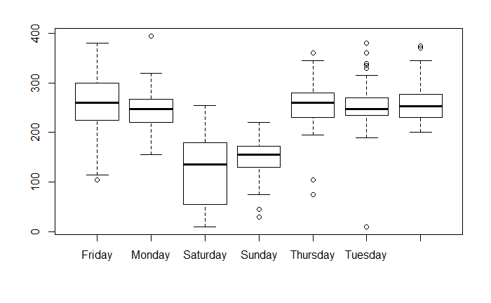
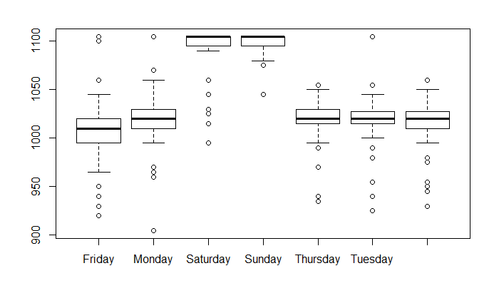
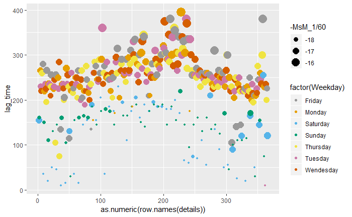
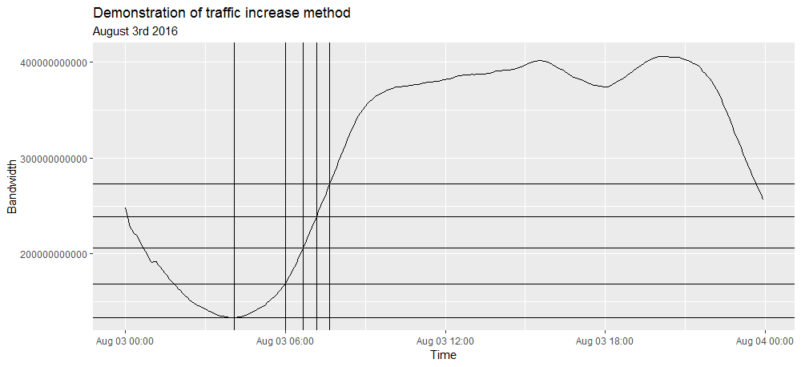

Data Science Overview
International Development Team
## High level topics * Skills/techniques * Tools * Projects & workflow
Skills and Techniques
Maths, computing, user design, domain/specialist knowledge...
## Maths * Statistics * Machine Learning * Deep Learning
## Supervised Machine Learning in 60 seconds * We have a bunch of data and we want to predict something * We create two sets: training and testing * We combine the variables we have (somewhat) randomly * Are we close to what we're trying to predict * Repeat...
## Computing * R and Python * Higher level programming language * Interacting with data sources * Software development * Understanding distributed systems/cloud infrastructure <img src="img/R.jpg" alt="drawing" width="200"/>
## But also: * Scala * Rust * Julia * Bash * Java * Matlab * And many more...
## Environments * DAP * UN Global Platform
## Outputs: * Reports * Automated Pipeline * Application/service * MORE DATA!!!
## Workflows * Understand your question/need * Find some data * Explore the data * Model the data * Visualise the outputs * Present/communitcate the outputs
Projects within ONS/ UN Global Platform
## Urban Forests <img src="img/streets.png" alt="streets" width="558"/>
## Urban Forests <img src="img/street_view.png" alt="street view" width="558"/>
## Urban Forests * Tools * Lots... * Skills * Lots... * Outputs * Reports and reusable workflows
## Optimus/NLP * Natural Language Processing
#### Afternoon peaks 
#### Afternoon peaks 
#### Afternoon peaks 
#### Afternoon peaks 
## Morning Wake Up * Are there differences in the speed of increase in internet consumption between days? * Developed a **very** crude method to measure this rate each day. * How long does it take to reach 2x the trough measure each day? * Fill in the gaps with other thresholds * Calculate a set of gradients and the ratio between these gradients * Find some interesting anomalies
#### Morning Wake up 
##### Is the rate dependent on trough depth 
#### Comparison of gradients 
#### What is this outlier? 
#### Is this present in Lon2? 
### Decomposition and Anomaly Detection * Could hopefully be used to identify anomalies through deviation from the forecast. * Multiple, complex seasonalities proved difficult to model. * Regression tree, Singular Spectrum Analysis, LSTM used. * SSA is very promising, Phil has focussed more on this.
### LSTM * A form of recurrent neural network that allows memory of long term dependencies * Studies have looked at using this method: [Uber](https://eng.uber.com/neural-networks/), [Thesis](http://www.diva-portal.org/smash/get/diva2:1149130/FULLTEXT01.pdf) * Not optimised but developed a working pipeline to work with the data in Keras * Cross validation is also a challenge with timeseries data
### LSTM - Implementation in Keras * Requires 3D input array: features, sequences, observation * Lag the X input * Only one feature * Select a batch size * Architecture - simple as possible * Stateful layers but reset after each epoch
### LSTM - Implementation in Keras 
### LSTM  
### LSTM Results RMSE came back as 94827, which given the scale of the data isn't bad.  *Remember this is a basic model!*
### LSTM Error Detect 
### LSTM Error Detect 
## Traffic Comparison * Already considered that the afternoon dip maybe indicator of commuting time * Big data team recently presented on traffic data as lagged indicator of GDP * Can internet traffic be used as an indicator for road traffic
## Traffic Comparison 
## Learning Points * Writing code that someone else can read * Writing code that is not horribly inefficient * Running an exploratory data analysis * Preparing a project for open-sourcing and publishing. * How present using reveal.js
## Thanks! Any questions or thoughts? Presentation made using reveal.js